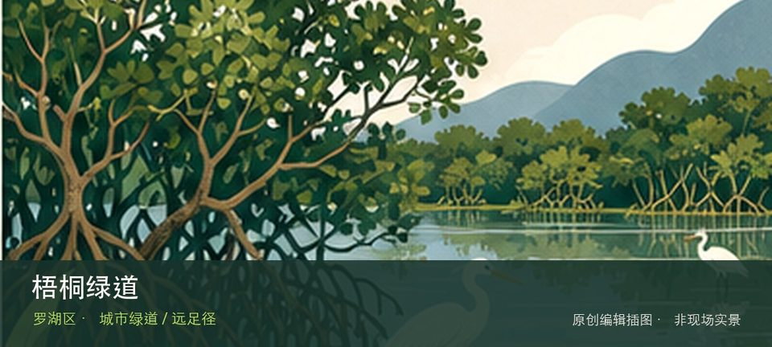

适合谁
适合有基础步行体力、愿意按天气调整路线的人；行动不便者应只选择平缓开放段。

SHENZHEN GUIDE · 065
东湖公园南门至横沥口水库 · 城市绿道 / 远足径
梧桐绿道位于东湖公园南门至横沥口水库，约15公里山水绿道沿深圳水库与梧桐山河展开，通常开放时间为06:00—23:00。现场的空间线索集中在深圳水库岸线和梧桐山河驿站，把两者连起来看，才不会只剩一个笼统印象。现场不必追求一次走完，先在深圳水库岸线与梧桐山河驿站之间确定主线，再按体力、日照和天气保留折返方案。山地、滨水或林下路面会随降雨改变，当天预警和开放边界始终比旧轨迹更优先。
WHY GO
适合有基础步行体力、愿意按天气调整路线的人；行动不便者应只选择平缓开放段。
第一次到梧桐绿道先把深圳水库岸线设为主目标，再视天气和现场边界决定是否前往梧桐山河驿站；返程节点应在出发前确定。
公交到东湖公园南门、罗湖体育馆或梧桐山村后分段进入；自驾可先核对罗湖体育馆停车场。
导航至梧桐绿道官方开放入口配套或邻近正规公共停车场；周末满位即改乘公共交通，不在绿道口、村道或消防通道临停。
10 月至次年 4 月较舒适；4—9 月湿热且雷雨集中，强降雨前后不进入山脊、溪谷、陡坡或低洼路段。
NEARBY IDEAS